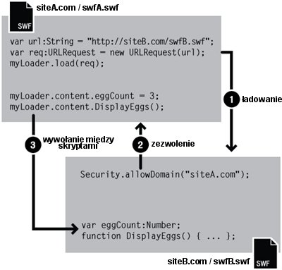

| Pakiet | flash.system |
| Klasa | public final class Security |
| Dziedziczenie | Security |
| Wersja języka: | ActionScript 3.0 |
| Wersje środowiska wykonawczego: | AIR 1.0, Flash Player 9, Flash Lite 4 |
 Ukryj dziedziczone właściwości publiczne
Ukryj dziedziczone właściwości publiczne Pokaż dziedziczone właściwości publiczne
Pokaż dziedziczone właściwości publiczne| Właściwość | Zdefiniowane przez | ||
|---|---|---|---|
 | constructor : Object
Odwołanie do obiektu klasy lub funkcji konstruktora, dotyczące danej instancji obiektu. | Object | |
| exactSettings : Boolean [statyczny]
Określa, w jaki sposób program Flash Player lub AIR ma wybierać domenę dotyczącą pewnych ustawień zawartości, w tym ustawień odpowiedzialnych za uprawnienia dostępu do mikrofonu i kamery, przydziały zasobów i przechowywanie trwałych obiektów udostępnionych. | Security | ||
| pageDomain : String [statyczny] [tylko do odczytu]
Fragment domeny strony HTML zawierającej plik SWF. | Security | ||
| sandboxType : String [statyczny] [tylko do odczytu]
Wskazuje typ obszaru izolowanego, w których działa wywołujący plik | Security | ||
| Metoda | Zdefiniowane przez | ||
|---|---|---|---|
[statyczny]
Zezwala plikom SWF w rozpoznanych domenach na uzyskiwanie dostępu do obiektów i zmiennych w pliku SWF zawierającym wywołanie metody allowDomain(). | Security | ||
[statyczny]
Zezwala plikom SWF i HTML w zidentyfikowanych domenach na dostęp do obiektów i zmiennych w wywołującym pliku SWF udostępnianym przy użyciu protokołu HTTPS. | Security | ||
|
Wskazuje, czy dla obiektu zdefiniowano określoną właściwość. | Object | |
|
Wskazuje, czy instancja klasy Object należy do łańcucha prototypów obiektu określonego jako parametr. | Object | |
[statyczny]
Wyszukuje plik reguł w lokalizacji określonej przez parametr url. | Security | ||
|
Wskazuje, czy określona właściwość istnieje i jest przeliczalna. | Object | |
|
Ustawia dostępność właściwości dynamicznej używanej w pętlach. | Object | |
[statyczny]
Powoduje, że w programie Flash Player jest wyświetlany panel ustawień zabezpieczeń. | Security | ||
|
Zwraca ciąg reprezentujący obiekt — sformatowany zgodnie z konwencjami właściwymi dla ustawień regionalnych. | Object | |
|
Zwraca ciąg reprezentujący określony obiekt. | Object | |
|
Zwraca pierwotną wartość dla określonego obiektu. | Object | |
| Stała | Zdefiniowane przez | ||
|---|---|---|---|
| APPLICATION : String = "application" [statyczny]
Plik działa w aplikacji AIR i został zainstalowany z pakietem (plik AIR) dla tej aplikacji. | Security | ||
| LOCAL_TRUSTED : String = "localTrusted" [statyczny]
Plik jest plikiem lokalnym, a użytkownik nadał mu status pliku zaufanego (za pomocą Menedżera ustawień programu Flash Player lub pliku konfiguracyjnego FlashPlayerTrust). | Security | ||
| LOCAL_WITH_FILE : String = "localWithFile" [statyczny]
Plik jest plikiem lokalnym, nie został zaakceptowany przez użytkownika jako plik zaufany i nie jest to plik SWF, który został opublikowany w sieci. | Security | ||
| LOCAL_WITH_NETWORK : String = "localWithNetwork" [statyczny]
Plik jest plikiem lokalnym, nie został zaakceptowany przez użytkownika jako plik zaufany i jest to plik SWF, który został opublikowany w sieci. | Security | ||
| REMOTE : String = "remote" [statyczny]
Plik pochodzi z Internetu i jest kontrolowany za pomocą domenowych reguł z obszaru izolowanego. | Security | ||
exactSettings | właściwość |
exactSettings:Boolean| Wersja języka: | ActionScript 3.0 |
| Wersje środowiska wykonawczego: | AIR 1.0, Flash Player 9, Flash Lite 4 |
Określa, w jaki sposób program Flash Player lub AIR ma wybierać domenę dotyczącą pewnych ustawień zawartości, w tym ustawień odpowiedzialnych za uprawnienia dostępu do mikrofonu i kamery, przydziały zasobów i przechowywanie trwałych obiektów udostępnionych. Aby plik SWF korzystał z tych samych ustawień, które używane były w programie Flash Player 6, należy ustawić właściwość exactSettings na wartość false.
W programie Flash Player 6 domena używana dla tych ustawień odtwarzacza była określana na podstawie końcowej części nazwy domeny pliku SWF. Jeśli domena pliku SWF składała się z więcej niż dwóch segmentów, www.example.com, pierwszy segment („www”) był usuwany, a używana była pozostała część nazwy domeny: example.com. A zatem w programie Flash Player 6 domena example.com byłaby używana dla omawianych ustawień zarówno w przypadku nazwy www.example.com, jak i store.example.com. Podobnie, w przypadku nazw www.example.co.uk i store.example.co.uk nazwa domeny ustawień byłaby równa example.co.uk. W programie Flash Player 7 i nowszych wersjach ustawienia odtwarzacza są domyślnie wybierane na podstawie całej nazwy domeny pliku SWF; na przukład plik SWF z witryny www.example.com używałby ustawień odtwarzacza dla domeny www.example.com, a plik SWF z witryny store.example.com używałby odrębnych ustawień odtwarzacza dla domeny store.example.com.
Gdy właściwość Security.exactSettings jest ustawiona na true, program Flash Player lub środowisko AIR wybiera ustawienia na podstawie pełnych nazw domen. Domyślnie właściwość exactSettings ma wartość true. Ewentualnej zmiany wartości właściwości exactSettings na inną niż domyślna należy dokonać, zanim wystąpią zdarzenia wymuszające na programie Flash Player lub środowisku AIR wybór ustawień odtwarzacza — na przykład takie, jak użycie kamery lub mikrofonu bądź pobranie trwałego obiektu współużytkowanego.
Jeśli wcześniej opublikowano plik SWF w wersji 6 i utworzono z niego trwałe obiekty współużytkowane, a teraz zachodzi potrzeba pobrania takich obiektów z tego pliku SWF po przeniesieniu go do wersji 7 lub nowszej, ewentualnie pobrania takich obiektów z innego pliku SWF w wersji 7 lub nowszej, należy ustawić właściwość Security.exactSettings na false przed wywołaniem metody SharedObject.getLocal().
Implementacja
public static function get exactSettings():Boolean public static function set exactSettings(value:Boolean):voidZgłasza
SecurityError — Aplikacja Flash Player lub AIR użyła już wartości właściwości exactSettings co najmniej raz w procesie podejmowania decyzji dotyczącej ustawień odtwarzacza.
|
pageDomain | właściwość |
pageDomain:String [tylko do odczytu] | Wersja języka: | ActionScript 3.0 |
| Wersje środowiska wykonawczego: | Flash Player 10.3, AIR 2.7 |
Fragment domeny strony HTML zawierającej plik SWF.
Ze względów bezpieczeństwa ta metoda nie zwraca pełnego adresu URL, a jedynie domenę strony, na przykład http://www.example.com. Jeśli ten plik SWF nie znajduje się na stronie HTML lub ze względów bezpieczeństwa nie można uzyskać dostępu do domeny strony, ta właściwość zwraca ciąg undefined.
Implementacja
public static function get pageDomain():StringsandboxType | właściwość |
sandboxType:String [tylko do odczytu] | Wersja języka: | ActionScript 3.0 |
| Wersje środowiska wykonawczego: | AIR 1.0, Flash Player 9, Flash Lite 4 |
Wskazuje typ obszaru izolowanego, w których działa wywołujący plik.
Właściwość Security.sandboxType zawiera jedną z następujących wartości:
remote(Security.REMOTE) — Plik pochodzi z internetowego adresu URL i jest kontrolowany przez reguły domenowe z obszaru izolowanego.localWithFile(Security.LOCAL_WITH_FILE) — Plik jest plikiem lokalnym, nie został zaakceptowany przez użytkownika jako plik zaufany i nie jest to plik SWF, który został opublikowany w sieci. Plik może odczytywać lokalne źródła danych, ale nie może komunikować się z Internetem.localWithNetwork(Security.LOCAL_WITH_NETWORK) — Plik SWF jest plikiem lokalnym, nie został zaakceptowany przez użytkownika jako plik zaufany i został opublikowany w sieci. Plik SWF może komunikować się z Internetem, ale nie może czytać z lokalnych źródeł danych.localTrusted(Security.LOCAL_TRUSTED) — Plik jest plikiem lokalnym, a użytkownik nadał mu status pliku zaufanego (za pomocą Menedżera ustawień programu Flash Player lub pliku konfiguracyjnego FlashPlayerTrust). Plik może odczytywać lokalne źródła danych i może komunikować się z Internetem.application(Security.APPLICATION) — Plik działa w aplikacji AIR i został zainstalowany z pakietem (plik AIR) dla tej aplikacji. Domyślnie pliki w obszarze izolowanym aplikacji AIR mogą wymieniać skrypty z jakiegokolwiek pliku z dowolnej domeny (mimo że pliki spoza obszaru izolowanego aplikacji AIR nie mają uprawnień do wywoływania skryptów z plików AIR). Domyślnie pliki z obszaru izolowanego aplikacji AIR mogą ładować zawartość i dane z dowolnej domeny.
Więcej informacji na temat zabezpieczeń zawiera odpowiedni temat w Centrum programistów programu Flash Player w kategorii Bezpieczeństwo.
Implementacja
public static function get sandboxType():StringPowiązane elementy interfejsu API
allowDomain | () | metoda |
public static function allowDomain(... domains):void| Wersja języka: | ActionScript 3.0 |
| Wersje środowiska wykonawczego: | AIR 1.0, Flash Player 9, Flash Lite 4 |
Zezwala plikom SWF w rozpoznanych domenach na uzyskiwanie dostępu do obiektów i zmiennych w pliku SWF zawierającym wywołanie metody allowDomain().
Uwaga: Wywołanie tej metody z kodu w obszarze izolowanym aplikacji AIR powoduje zgłoszenie wyjątku SecurityError. Treść spoza domeny zabezpieczeń aplikacji nie może wykonywać krzyżowo skryptów w treści w obszarze izolowanym aplikacji. Jednak treść spoza obszaru izolowanego aplikacji może komunikować się z treścią w obszarze izolowanym, korzystając z mostka obszaru izolowanego.
Jeśli dwa pliki SWF są udostępniane przez serwer z tej samej domeny — na przykład http://mysite.com/swfA.swf i http://mysite.com/swfB.swf — wówczas plik swfA.swf może odczytywać i modyfikować zmienne, obiekty, właściwości, metody itd. w pliku swfB.swf, a plik swfB.swf może wykonywać analogiczne operacje na na pliku swfA.swf. Mówimy w tym przypadku o wykonywaniu skryptów między filmami lub o krzyżowym wykonywaniu skryptów.
Jeśli dwa pliki SWF są udostępniane przez serwery z różnych domen — na przykład http://siteA.com/swfA.swf i http://siteB.com/siteB.swf — wówczas domyślnie program Flash Player nie zezwala plikowi swfA.swf na wykonywanie operacji skryptowych na pliku swfB.swf, ani nie zezwala plikowi swfB.swf na wykonywanie operacji skryptowych na pliku swfA.swf. Plik SWF udziela uprawnień plikom SWF z innych domen, wywołując metodę Security.allowDomain(). Ten mechanizm nazywany jest międzydomenowym wykonywaniem skryptów. Poprzez wywołanie Security.allowDomain("siteA.com"), plik siteB.swf udziela plikowi siteA.swf zezwolenia na wykonywanie na sobie operacji skryptowych.
Przy wszelkich odwołaniach między skryptami konieczne jest jednoznaczne określenie obu uczestniczących plików. Na potrzeby tej dyskusji plik odwołujący się będzie nazywany stroną wywołującą (zwykle jest to wywołujący plik SWF), a drugi plik będzie nazywany stroną wywoływaną (zwykle jest to wywoływany plik SWF lub plik, do którego w inny sposób uzyskiwany jest dostęp). Gdy plik siteA.swf odwołuje się do pliku siteB.swf, siteA.swf jest stroną wywołującą, a siteB.swf jest stroną wywoływaną.

Uprawnienia międzydomenowe ustanowione za pomocą metody allowDomain() są asymetryczne. W poprzednim przykładzie plik siteA.swf może odwołać się do pliku siteB.swf, ale plik siteB.swf nie może odwołać się do siteA.swf, ponieważ siteA.swf nie wywołał metody allowDomain() w celu nadania plikom SWF w witrynie siteB.com uprawnień do odwoływania się do siebie. Możliwe jest ustanowienie uprawnień symetrycznych poprzez wywołanie metody allowDomain() w obu plikach SWF.
Oprócz zapewnienia plikom SWF ochrony przed odwołaniami pochodzącymi z innych plików SWF i domen, program Flash Player chroni pliki SWF przed wywołaniami z innych domen inicjowanymi przez pliki HTML. Wykonanie operacji skryptowych plików HTML na plikach SWF może wystąpić w starszych funkcjach przeglądarki, np. SetVariable lub wywołaniach zwrotnych ustanawianych za pomocą metody ExternalInterface.addCallback(). Gdy wywołanie skryptowe z kodu HTML do SWF przekracza granicę domeny, docelowy plik SWF musi wcześniej wywołać metodę allowDomain(), podobnie jak dla wywołań z innego pliku SWF — w przeciwnym razie operacja nie powiedzie się.
Określenie adresu IP jako parametru metody allowDomain() nie zezwala na dostęp dla wszystkich stron, które pochodzą z określonego adresu IP. Zamiast tego dozwolony jest jedynie dostęp dla strony, która zawiera określony adres IP w jej adresie URL, a nie dla domeny, która odwzorowywana jest na ten adres IP.
Różnice charakterystyczne dla wersji
Reguły zabezpieczeń międzydomenowych w programie Flash Player ewoluowały między wersjami. Poniższa tabela podsumowuje różnice.
| Ostatnia wersja SWF zaangażowana w operację międzyskryptową | Metoda allowDomain() wymagana? | Metoda allowInsecureDomain() wymagana? | Czy plik SWF ma wywoływać metodę allowDomain(), czy allowInsecureDomain()? | Co można określić w metodzie allowDomain() lub allowInsecureDomain()? |
|---|---|---|---|---|
| 5 lub starsze | Nie | Nie | N/D | N/D |
| 6 | Tak, jeśli naddomeny są niezgodne | Nie | Plik SWF zezwalający na dostęp lub dowolny plik SWF z tą samą naddomeną, co plik SWF zezwalający na dostęp |
|
| 7 | Tak, jeśli domeny nie są w pełni zgodne | Tak w przypadku dostępu z HTTP do HTTPS (nawet jeśli domeny są w pełni zgodne) | SWF zezwalający na dostęp lub dowolny plik SWF z dokładnie tą samą domeną, co plik SWF zezwalający na dostęp |
|
| 8 lub nowsza | Tak, jeśli domeny nie są w pełni zgodne | Tak w przypadku dostępu z HTTP do HTTPS (nawet jeśli domeny są w pełni zgodne) | Plik SWF zezwalający na dostęp |
|
Wersje, które sterują zachowaniem programu Flash Player, są wersjami SWF (publikowanymi wersjami pliku SWF), nie zaś wersjami samego programu Flash Player. Na przykład: jeśli program Flash Player 8 odtwarza plik SWF opublikowany dla wersji 7, zastosowane zostanie zachowanie zgodne z wersją 7. Takie postępowanie zapewnia, że uaktualniania odtwarzacza nie zmienią zachowania metody Security.allowDomain() w zainstalowanych plikach SWF.
Kolumna wersji w poprzedniej tabeli pokazuje, że ostatnia wersja SWF obejmuje operację wywołań między skryptami. Program Flash Player określa swoje zachowanie na podstawie wersji pliku SWF ubiegającego się o dostęp lub wersji pliku SWF zezwalającego na dostęp, w zależności od tego, która wersja jest nowsza.
Poniższe akapity zawierają bardziej szczegółowe informacje na temat zmian zabezpieczeń w programie Flash Player obejmujących metodę Security.allowDomain().
Wersja 5. Brak ograniczeń dla międzydomenowego wykonywania operacji skryptowych.
Wersja 6. Wprowadzenie zabezpieczeń dla międzydomenowego wykonywania operacji skryptowych. Domyślnie program Flash Player nie zezwala na międzydomenowe wykonywanie operacji skryptowych; zezwolić na to może metoda Security.allowDomain(). Aby określić, czy dwa pliki znajdują się w tej samej domenie, program Flash Player używa naddomeny każdego pliku, który jest dokładną nazwą hosta z adresu URL pliku, po odjęciu pierwszego segmentu (tak aby pozostały minimum dwa segmenty). Na przykład: naddomeną www.mysite.com jest mysite.com. Pliki SWF z domen www.mysite.com i store.mysite.com wykonują między sobą operacje skryptowe, nie wywołując metody Security.allowDomain().
Wersja 7. Zamiast dopasowywania naddomen stosowane jest dokładne dopasowywanie domen. Dwa pliki mogą wykonać między sobą operacje skryptowe tylko, jeśli nazwy hostów w ich adresach URL są identyczne; w innym wypadku wymagane jest wywołanie metody Security.allowDomain(). Domyślnie pliki załadowane z adresów URL innych niż protokołu HTTPS, nie mogą wykonać operacji skryptowych na plikach załadowanych z adresów URL protokołu HTTPS nawet, jeśli pliki załadowane zostały z dokładnie tej samej domeny. To ograniczenie pomaga chronić pliki udostępniane przez protokół HTTPS, ponieważ plik udostępniony przez protokół inny niż HTTPS jest podatny na modyfikacje w czasie pobierania i złośliwie zmodyfikowany plik udostępniony przez protokół inny niż HTTPS może uszkodzić plik udostępniony przez protokół HTTPS, który jest odporny na takie manipulacje. Metoda Security.allowInsecureDomain() została wprowadzona w celu umożliwienia plikom SWF udostępnianym z zasady przez protokół HTTPS dobrowolnego wyłączenia tego ograniczenia, jednak użycie metody Security.allowInsecureDomain() nie jest zalecane.
Wersja 8. Dwa główne obszary zmian to:
- Wywołanie metody
Security.allowDomain()zezwala na wykonywanie operacji między skryptami tylko, jeśli plik SWF zezwalający na dostęp jest plikiem SWF, który wywołał metodęSecurity.allowDomain(). Innymi słowy, plik SWF, który wywołuje metodęSecurity.allowDomain(), zezwala na dostęp tylko do własnej treści. W poprzednich wersjach wywołanie metodySecurity.allowDomain()zezwala na wykonywanie operacji między skryptami w miejscu, w którym plik SWF zezwalający na dostęp może być dowolnym plikiem SWF w tej samej domenie co plik SWF, który wywołał metodęSecurity.allowDomain(). Wcześniej wywołanie metodySecurity.allowDomain()powodowało otwarcie całej domeny wywołującej pliku SWF. - Dzięki wywołaniom
Security.allowDomain("*")iSecurity.allowInsecureDomain("*")dodana została obsługa symbolu wieloznacznego. Symbol wieloznaczny (*) zezwala na wykonywanie operacji między skryptami w miejscu, w którym plik ubiegający się o dostęp jest dowolnym plikiem ładowanym z dowolnej lokalizacji. Symbol wieloznaczny należy interpretować jako uprawnienie globalne. Uprawnienia definiowane za pomocą symbolu wieloznacznego są wymagane w celu umożliwienia wykonania pewnego rodzaju operacji z zachowaniem reguł zabezpieczeń dla plików lokalnych. Szczególnie w przypadku lokalnego pliku SWF z uprawnieniami do dostępu sieciowego w celu wykonania operacji skryptowych na pliku SWF w Internecie, plik SWF w Internecie zezwalający na dostęp musi wywołać metodęSecurity.allowDomain("*"), wskazując, że pochodzenie lokalnego pliku SWF jest nieznane. (Jeśli plik SWF w Internecie zostanie załadowany z adresu URL za pomocą protokołu HTTPS, plik SWF w Internecie musi w zamian wywołać metodęSecurity.allowInsecureDomain("*")).
Sporadycznie można się natknąć na następującą sytuację: Programista ładuje podrzędny plik SWF z innej domeny i chce umożliwić podrzędnemu plikowi SWF wykonanie operacji skryptowych na nadrzędnym pliku SWF, jednak końcowa domena podrzędnego pliku SWF jest nieznana. Taka sytuacja ma miejsce np. w momencie korzystania z przekierowań równoważących obciążenie lub serwerów innych firm.
W tej sytuacji można użyć właściwości url obiektu URLRequest, który jest przekazywany do metody Loader.load(). Na przykład, jeśli podrzędny plik SWF zostanie załadowany do nadrzędnego pliku SWF, możliwy będzie dostęp do właściwości contentLoaderInfo obiektu Loader dla nadrzędnego pliku SWF:
Security.allowDomain(loader.contentLoaderInfo.url)
Należy zaczekać, aż podrzędny plik SWF rozpocznie ładowanie w celu pobrania poprawnej wartości właściwości url. Aby określić, kiedy podrzędny plik SWF rozpoczął ładowanie, należy użyć zdarzenia progress.
Może również wystąpić sytuacja odwrotna, tzn. może zostać utworzony podrzędny plik SWF, który zechce pozwolić swojemu plikowi nadrzędnemu, aby ten wykonał na nim operacje skryptowe, ale nie zna domeny tego pliku nadrzędnego. W tej sytuacji możliwe jest uzyskanie dostępu do właściwości loaderInfo obiektu wyświetlanego, który jest obiektem głównym pliku SWF. W pliku podrzędnym SWF należy wywołać metodę Security.allowDomain( this.root.loaderInfo.loaderURL). Nie ma konieczności czekania na załadowanie nadrzędnego pliku SWF; nadrzędny plik zostanie załadowany, zanim załadowany zostanie plik podrzędny.
Jeśli treść jest publikowana dla wersji Flash Player 8 lub nowszej, sytuacje te można również obsłużyć, wywołując metodę Security.allowDomain("*"). Czasami jednak takie „skracanie sobie drogi” może okazać się niebezpieczne, ponieważ umożliwia uzyskanie dostępu do wywołującego pliku SWF przez dowolny inny plik SWF z dowolnej domeny. Bezpieczniejszym rozwiązaniem jest zazwyczaj użycie właściwości _url.
Więcej informacji na temat zabezpieczeń zawiera odpowiedni temat w Centrum programistów programu Flash Player w kategorii Bezpieczeństwo.
Parametry
... domains — Jeden lub większa liczba ciągów znaków lub obiektów URLRequest, które określają nazwy domen, z których użytkownik chce umożliwić dostęp. Istnieje możliwość określenia domeny specjalnej „*”, aby umożliwić dostęp z wszystkich domen.
W programie Flash Professional: określenie „*” jest jedynym sposobem na to, aby umożliwić dostęp do nielokalnych plików SWF z lokalnych plików SWF, które zostały opublikowane przy użyciu opcji Tylko sieć lokalna (dostępnej w ramach opcji Zabezpieczenie odtwarzania lokalnego w narzędziu produkcyjnym Flash). Uwaga: Symbol wieloznaczny nie działa w przypadku poddomen. Na przykład nie można użyć wyrażenia |
Zgłasza
SecurityError — Wywołanie tej metody z kodu w obszarze izolowanym aplikacji AIR powoduje zgłoszenie wyjątku SecurityError. Zawartość spoza obszaru izolowanego aplikacji nie może generować skryptów krzyżowych dla zawartości w tym obszarze.
|
Powiązane elementy interfejsu API
allowInsecureDomain | () | metoda |
public static function allowInsecureDomain(... domains):void| Wersja języka: | ActionScript 3.0 |
| Wersje środowiska wykonawczego: | AIR 1.0, Flash Player 9, Flash Lite 4 |
Zezwala plikom SWF i HTML w zidentyfikowanych domenach na dostęp do obiektów i zmiennych w wywołującym pliku SWF udostępnianym przy użyciu protokołu HTTPS.
W programie Flash Player udostępniono metodę allowInsecureDomain(), aby zapewnić autorom skryptów bardziej elastyczną funkcjonalność, jednak wywoływanie tej metody nie jest zalecane. Udostępnianie pliku przy użyciu protokołu HTTPS pod pewnymi względami chroni serwer oraz użytkowników, natomiast wywołanie metody allowInsecureDomain zmniejsza skuteczność tej ochrony.
Uwaga: Wywołanie tej metody z kodu w obszarze izolowanym aplikacji AIR powoduje zgłoszenie wyjątku SecurityError. Treść spoza domeny zabezpieczeń aplikacji nie może wykonywać krzyżowo skryptów w treści w obszarze izolowanym aplikacji. Jednak treść spoza obszaru izolowanego aplikacji może komunikować się z treścią w obszarze izolowanym, korzystając z mostka obszaru izolowanego.
Ta metoda działa tak samo, jak metoda Security.allowDomain(), ale dodatkowo zezwala na operacje, w których strona uzyskująca dostęp jest ładowana z użyciem protokołu innego niż HTTPS, zaś strona, do której uzyskiwany jest dostęp, jest ładowana przy użyciu protokołu HTTPS. W programie Flash Player 7 i nowszych wersjach pliki udostępniane przez protokół inny niż HTTPS nie mogą wykonywać operacji skryptowych na plikach udostępnianych przez protokół HTTPS. Metoda allowInsecureDomain() usuwa to ograniczenie, jeśli zostanie wywołana z pliku SWF udostępnianego przez protokół HTTPS.
Metody allowInsecureDomain() należy używać wyłącznie w celu umozliwienia plikom udostępnianym przez protokół inny niż HTTPS wykonywanie operacji skryptowych na plikach udostępnianych przez HTTPS. Jej zastosowanie ogranicza się do sytuacji, gdy zarówno plik udostępniany przez protokół HTTPS, jak i plik udostępniany przez inny protokół, są udostępniane przez serwer w tej samej domenie, np. jeśli plik SWF z witryny http://mysite.com chce wykonywać operacje skryptowe na pliku SWF z witryny https://mysite.com. Nie należy używać tej metody do zezwalania na wykonywanie operacji skryptowych między dwoma plikami udostępnianymi przez protokoły inne niż HTTPS, między dwoma plikami udostępnianymi przez protokół HTTPS ani operacji z plików udostępnianych przez HTTPS na plikach udostępnianych przez inny protokół. W takich sytuacjach należy używać metody allowDomain().
allowInsecureDomain() może stworzyć sytuację potencjalnie niebezpieczną, jeśli nie będzie stosowana z rozwagą.
Należy zauważyć, że poniższe informacje są tylko jednym z możliwych scenariuszy utworzonym, aby ułatwić zrozumienie działania metody allowInsecureDomain() na podstawie rzeczywistego przykładu wykonywania operacji skryptowych. Nie obejmują one wszystkich problemów związanych z architekturą zabezpieczeń i powinny służyć jedynie jako informacje podstawowe. Serwis Flash Player Developer Center zawiera obszerne informacje na temat programu Flash Player oraz bezpieczeństwa. Więcej informacji zawiera temat: Bezpieczeństwo w serwisie Flash Player Developer Center.
Załóżmy, że programista tworzy sklep internetowy, która zawiera dwa składniki: katalog, który nie musi być zabezpieczony, ponieważ zawiera tylko informacje publiczne; oraz składnik koszyk/kasa, który mysi być zabezpieczony, aby chronić informacje finansowe i osobiste użytkownika. Przypuśćmy, że katalog będzie obsługiwany z pliku http://mysite.com/catalog.swf, a koszyk z pliku https://mysite.com/cart.swf. Jednym z wymogów dla strony jest, aby strony trzecie nie były w stanie wykraść numerów kart kredytowych użytkowników, wykorzystując słabość architektury zabezpieczeń.
Przypuśćmy, że agresor pośredniczący ingeruje między serwerem a użytkownikami strony, próbując wykraść numery kart kredytowych wprowadzanych przez użytkowników w aplikacji koszyka. Stroną pośredniczącą może być np. niedokładny dostawca usług internetowych, z którego usług korzystają niektórzy użytkownicy lub złośliwy administrator w miejscu pracy użytkownika — każdy, kto ma możliwość zobaczenia lub zmiany pakietów sieciowych przesyłanych w Internecie drogą publiczną między użytkownikami a serwerem. Taka sytuacja nie jest wcale rzadkością.
Jeśli plik cart.swf używa do przesyłania na serwer informacji o kartach kredytowych protokołu HTTPS, wówczas agresor pośredniczący nie może bezpośrednio wykraść informacji z pakietów sieciowych, ponieważ transmisja z użyciem protokołu HTTPS jest szyfrowana. Jednak agresor może używać różnych technik: zmiana zawartości jednego z plików SWF podczas dostarczania go do użytkownika, zastąpienie pliku SWF zmienioną wersją, która przesyła informacje użytkownika na inny serwer należący do agresora.
Protokół HTTPS m.in. zapobiega wykonaniu atakom „modyfikującym”, ponieważ poza tym, że jest on szyfrowany, transmisje HTTPS są odporne na manipulacje. Jeśli agresor pośredniczący zmieni pakiet, strona odbierająca wykryje zmianę i odrzuci pakiet. Dlatego agresor w tej sytuacji nie może zmienić pliku cart.swf, ponieważ został on dostarczony za pomocą protokołu HTTPS.
Przypuśćmy jednak, że programista zezwolił przyciskom w pliku catalog.swf, który obsługiwany jest przez protokół HTTP, na dodawanie pozycji do koszyka w pliku cart.swf, który obsługiwany jest przez protokół HTTPS. Aby tego dokonać, plik cart.swf wywołuje metodę allowInsecureDomain(), która zezwala, aby plik catalog.swf odwoływał się do skryptów pliku cart.swf. Działanie to ma niezamierzone konsekwencje: agresor może zmienić plik catalog.swf w chwili rozpoczęcia pobierania go przez użytkownika, ponieważ catalog.swf dostarczany jest za pomocą protokołu HTTP, który nie jest odporny na manipulacje. Zmieniony plik agresora catalog.swf może w tym momencie wykonać operację skryptową na pliku cart.swf, ponieważ cart.swf wywołuje metodę allowInsecureDomain(). Zmieniony plik catalog.swf może użyć kodu ActionScript w celu uzyskania dostępu do zmiennych w pliku cart.swf, a zatem odczytać informacje dotyczące karty kredytowej użytkownika i inne wrażliwe dane. Zmieniony plik catalog.swf może wówczas wysłać te dane na serwer agresora.
Oczywiście taka implementacja nie jest pożądana, ale nadal chcemy, by możliwe było wywoływanie skryptów między oboma plikami SWF w witrynie. Istnieją dwa sposoby na przeprojektowanie hipotetycznej witryny sklepu internetowego, które pozwolą uniknąć użycia metody allowInsecureDomain():
- Obsługa wszystkich plików SWF w aplikacji za pomocą protokołu HTTPS. Jest to najprostsze i najpewniejsze rozwiązanie. W tym scenariuszu oba pliki catalog.swf i cart.swf należy obsłużyć za pomocą protokołu HTTPS. Po przełączeniu pliku np. catalog.swf z protokołu HTTP na HTTPS może nastąpić niewielki wzrost użycia przepustowości łącza oraz wzrost obciążenia procesora, a użytkownicy mogą doświadczyć nieznacznego wydłużenia czasu ładowania aplikacji. Aby określić wpływ tych efektów, należy przeprowadzić doświadczenia z rzeczywistymi serwerami; zazwyczaj wydajność nie jest gorsza niż 10-20% dla każdego z nich, a czasami nie występuje żadna różnica. Wyniki można zazwyczaj poprawić, instalując na serwerze sprzęt lub oprogramowanie przyspieszające obsługę protokołu HTTPS. Główną korzyścią płynącą z obsługi wszystkich plików SWF współpracujących za pośrednictwem protokołu HTTPS jest możliwość używania adresów URL protokołu HTTPS jako głównego adresu URL w przeglądarce użytkownika bez konieczności generowania jakichkolwiek ostrzeżeń ze strony przeglądarki. W przeglądarce wyświetlana jest również ikona kłódki, powszechnie symbolizująca użytkownikom zaufane zabezpieczenie.
- Wykonanie operacji skryptowych plików HTTPS na plikach HTTP, zamiast wykonania operacji skryptowych plików HTTP na plikach HTTPS. W tym scenariuszu możliwe jest zapisanie zawartości koszyka użytkownika w pliku catalog.swf i przydzielenie plikowi cart.swf zarządzania procesem dokonywania płatności. W czasie dokonywania płatności plik cart.swf może pobrać zawartość koszyka ze zmiennych ActionScript w pliku catalog.swf. Ograniczenie wywołań skryptowych z plików obsługiwanych przez HTTP do plików obsługiwanych przez HTTPS jest asymetryczne; mimo że plik catalog.swf obsługiwany przez protokół HTTP może nie bezpiecznie wywoływać skrypt w pliku cart.swf obsługiwanym przez HTTPS, plik HTTPS cart.swf może wywoływać plik HTTP catalog.swf. Taka strategia wymaga większej uwagi niż bazowanie wyłącznie na protokole HTTPS; plików SWF dostarczanych za pośrednictwem protokołu HTTP nie można traktować jako zaufanych z uwagi na ryzyko ich nieuprawnionego zmodyfikowania. Na przykład gdy plik cart.swf odczytuje zmienną ActionScript opisującą zawartość koszyka, kod ActionScript w pliku cart.swf nie może zakładać, że wartość tej zmiennej ma oczekiwany format. Należy sprawdzić, czy zawartość koszyka nie zawiera niepoprawnych danych, które mogłyby spowodować wykonanie niepożądanych działań przez plik cart.swf. Konieczne jest także pogodzenie się z ryzykiem, że jakaś strona pośrednicząca może zmodyfikować plik catalog.swf w taki sposób, że do pliku cart.swf trafią dane poprawne, ale zmienione; może to skutkować np. dodaniem towarów do koszyka użytkownika. Typowy proces płatności nieco ogranicza to ryzyko, ponieważ zwykle użytkownik musi ostatecznie zaakceptować listę wybranych towarów i całkowity koszt. Nie oznacza to jednak eliminacji ryzyka.
W przeglądarkach sieci Web od wielu lat obowiązywało ścisłe odseparowanie plików udostępnianych przez HTTPS i przez protokoły inne niż HTTPS, a opisany tutaj scenariusz ilustruje powody takiej separacji. Program Flash Player umożliwia obejście tego zabezpieczenia, jeśli jest to absolutnie konieczne, jednak w takim wypadku należy starannie przemyśleć ewentualne konsekwencje.
Więcej informacji na temat zabezpieczeń zawiera odpowiedni temat w Centrum programistów programu Flash Player w kategorii Bezpieczeństwo.
Parametry
... domains — Jeden lub większa liczba ciągów znaków lub obiektów URLRequest, które określają nazwy domen, z których użytkownik chce umożliwić dostęp. Istnieje możliwość określenia domeny specjalnej „*”, aby umożliwić dostęp z wszystkich domen.
Określenie „*” jest jedynym sposobem na to, aby umożliwić dostęp do nielokalnych plików SWF z lokalnych plików SWF, które zostały opublikowane przy użyciu opcji Tylko sieć lokalna (dostępnej w ramach opcji Zabezpieczenie odtwarzania lokalnego (Plik > Ustawienia publikowania > zakładka Flash) w narzędziu produkcyjnym Flash). Uwaga: Symbol wieloznaczny nie działa w przypadku poddomen. Na przykład nie można użyć wyrażenia |
Zgłasza
SecurityError — Wywołanie tej metody z kodu w obszarze izolowanym aplikacji AIR powoduje wywołanie wyjątku SecurityError. Zawartość spoza obszaru izolowanego aplikacji nie może generować skryptów krzyżowych dla zawartości w tym obszarze.
|
Powiązane elementy interfejsu API
loadPolicyFile | () | metoda |
public static function loadPolicyFile(url:String):void| Wersja języka: | ActionScript 3.0 |
| Wersje środowiska wykonawczego: | AIR 1.0, Flash Player 9, Flash Lite 4 |
Wyszukuje plik reguł w lokalizacji określonej przez parametr url. Programy Adobe AIR i Flash Player korzystają z plików reguł w celu określania, czy aplikacje będą miały uprawnienia do ładowania danych z serwerów innych niż ich własne. Należy zauważyć, że nawet mimo, że metoda nosi nazwę loadPolicyFile(), plik nie jest w rzeczywistości ładowany, dopóki nie zostanie utworzone żądanie sieciowe, które wymaga pliku reguł.
Za pomocą metody Security.loadPolicyFile() program Flash Player lub AIR może ładować pliki reguł z dowolnych lokalizacji, co przedstawia poniższy przykład:
Security.loadPolicyFile("http://www.example.com/sub/dir/pf.xml");
Dzięki temu program Flash Player lub AIR próbuje pobrać plik strategii z określonego adresu URL. Wszelkie uprawnienia udzielone przez plik reguł w tej lokalizacji będą miały zastosowanie do całej zawartości na tym lub niższym poziomie w wirtualnej hierarchii katalogów serwera.
Na przykład te wiersze kodu, wykonane po kodzie przedstawionym wcześniej, nie spowodują wygenerowania wyjątku:
import flash.net.*;
var request:URLRequest = new URLRequest("http://www.example.com/sub/dir/vars.txt");
var loader:URLLoader = new URLLoader();
loader.load(request);
var loader2:URLLoader = new URLLoader();
var request2:URLRequest = new URLRequest("http://www.example.com/sub/dir/deep/vars2.txt");
loader2.load(request2);
Jednak następujący kod spowoduje wygenerowanie wyjątku zabezpieczeń:
import flash.net.*;
var request3:URLRequest = new URLRequest("http://www.example.com/elsewhere/vars3.txt");
var loader3:URLLoader = new URLLoader();
loader3.load(request3);
Za pomocą metody loadPolicyFile() można załadować dowolną liczbę plików reguł. W przypadku rozważania żądania dotyczącego pliku reguł program Flash Player lub środowisko AIR zawsze oczekuje na zakończenie pobierania pliku reguł — dopiero wówczas może odrzucić żądanie. Jeśli żaden plik reguł nie zostanie określony za pomocą metody loadPolicyFile() autoryzującej żądanie, program Flash Player lub środowisko AIR sprawdza na koniec domyślną, oryginalne położenie.
Poszukując nadrzędnego pliku strategii, program Flash Player czeka trzy sekundy na odpowiedź serwera. Jeśli nie otrzyma odpowiedzi, zakłada, że nadrzędny plik strategii nie istnieje. Nie istnieje jednak żadna domyślna wartość limitu czasu dla wywołania metody loadPolicyFile(); program Flash Player zakłada, że wywoływany plik istnieje, i oczekuje tak długo, jak to tylko potrzebne, w celu jego załadowania. Stąd, aby upewnić się, że nadrzędny plik strategii został załadowany, należy użyć metody loadPolicyFile() w celu wywołania go w sposób jawny.
Nie można połączyć się z portem, który zazwyczaj jest zastrzeżony. Pełną listę zablokowanych portów zawiera sekcja „Ograniczanie sieciowych interfejsów API” w publikacji ActionScript 3.0 — podręcznik dla programistów.
Za pomocą protokołu xmlsocket oraz określonego numeru portu można pobierać pliki reguł bezpośrednio z serwera XMLSocket, co przedstawia poniższy przykład. Połączenia z gniazdami nie podlegają opisanym powyżej ograniczeniom wynikającym z blokowania portów.
Security.loadPolicyFile("xmlsocket://foo.com:414");
Dzięki temu program Flash Player lub AIR podejmuje próbę pobrania pliku strategii z określonego hosta lub portu. Po nawiązaniu połączenia z określonym portem program Flash Player lub AIR przesyła żądanie <policy-file-request /> zakończone bajtem null. Serwer musi wysłać bajt null w celu zakończenia pliku strategii, a następnie może zamknąć połączenie; jeśli serwer nie zamknie połączenia, program Flash Player lub AIR zamknie je po odebraniu kończącego bajtu null.
Można zapobiec korzystaniu z tej metody przez plik SWF, ustawiając parametr allowNetworking znaczników object i embed na stronie HTML, która zawiera treść SWF.
Więcej informacji na temat zabezpieczeń zawiera odpowiedni temat w Centrum programistów programu Flash Player w kategorii Bezpieczeństwo.
Parametry
url:String — Adres URL pliku reguł przeznaczonego do załadowania.
|
showSettings | () | metoda |
public static function showSettings(panel:String = "default"):void| Wersja języka: | ActionScript 3.0 |
| Wersje środowiska wykonawczego: | AIR 1.0, Flash Player 9, Flash Lite 4 |
Powoduje, że w programie Flash Player jest wyświetlany panel ustawień zabezpieczeń. Ta metoda nie ma zastosowania do zawartości w programie Adobe AIR; wywołanie jej w aplikacji nie przynosi żadnego rezultatu.
Parametry
panel:String (default = "default")SecurityPanel.DEFAULT.
|
Powiązane elementy interfejsu API
APPLICATION | Stała |
public static const APPLICATION:String = "application"| Wersja języka: | ActionScript 3.0 |
| Wersje środowiska wykonawczego: | AIR 1.0, Flash Lite 4 |
Plik działa w aplikacji AIR i został zainstalowany z pakietem (plik AIR) dla tej aplikacji. Ta zawartość jest uwzględniana w katalogu zasobów aplikacji AIR (w którym została zainstalowana zawartość aplikacji).
Powiązane elementy interfejsu API
LOCAL_TRUSTED | Stała |
public static const LOCAL_TRUSTED:String = "localTrusted"| Wersja języka: | ActionScript 3.0 |
| Wersje środowiska wykonawczego: | AIR 1.0, Flash Player 9, Flash Lite 4 |
Plik jest plikiem lokalnym, a użytkownik nadał mu status pliku zaufanego (za pomocą Menedżera ustawień programu Flash Player lub pliku konfiguracyjnego FlashPlayerTrust). Plik może odczytywać lokalne źródła danych i może komunikować się z Internetem.
Powiązane elementy interfejsu API
LOCAL_WITH_FILE | Stała |
public static const LOCAL_WITH_FILE:String = "localWithFile"| Wersja języka: | ActionScript 3.0 |
| Wersje środowiska wykonawczego: | AIR 1.0, Flash Player 9, Flash Lite 4 |
Plik jest plikiem lokalnym, nie został zaakceptowany przez użytkownika jako plik zaufany i nie jest to plik SWF, który został opublikowany w sieci. W programie Adobe AIR plik lokalny nie znajduje się w katalogu zasobów aplikacji; takie pliki są umieszczane w obszarze izolowanym aplikacji. Plik może odczytywać lokalne źródła danych, ale nie może komunikować się z Internetem.
Powiązane elementy interfejsu API
LOCAL_WITH_NETWORK | Stała |
public static const LOCAL_WITH_NETWORK:String = "localWithNetwork"| Wersja języka: | ActionScript 3.0 |
| Wersje środowiska wykonawczego: | AIR 1.0, Flash Player 9, Flash Lite 4 |
Plik jest plikiem lokalnym, nie został zaakceptowany przez użytkownika jako plik zaufany i jest to plik SWF, który został opublikowany w sieci. Plik może komunikować się z Internetem, ale nie może czytać z lokalnych źródeł danych.
Powiązane elementy interfejsu API
REMOTE | Stała |
public static const REMOTE:String = "remote"| Wersja języka: | ActionScript 3.0 |
| Wersje środowiska wykonawczego: | AIR 1.0, Flash Player 9, Flash Lite 4 |
Plik pochodzi z Internetu i jest kontrolowany za pomocą domenowych reguł obszaru izolowanego.
Powiązane elementy interfejsu API
click obiektu Sprite w celu wyświetlenia panelu ustawień magazynu lokalnego, który jest dostępny w obszarze ustawień programu Flash Player. Za pomocą metody draw() na stole montażowym zostało umieszczone pomarańczowe pole. Do metody draw() został dodany detektor zdarzenia click o nazwie clickHandler(), który odpowiada na zdarzenia click sterując programem Flash Player w taki sopsób, aby otworzyć panel ustawień magazynu lokalnego.
package {
import flash.display.Sprite;
import flash.text.TextField;
import flash.events.*;
import flash.system.Security;
import flash.system.SecurityPanel;
public class SecurityExample extends Sprite {
private var bgColor:uint = 0xFFCC00;
private var size:uint = 100;
public function SecurityExample() {
draw();
}
private function draw():void {
var child:Sprite = new Sprite();
child.graphics.beginFill(bgColor);
child.graphics.drawRect(0, 0, size, size);
child.graphics.endFill();
child.buttonMode = true;
var label:TextField = new TextField();
label.text = "settings";
label.selectable = false;
label.mouseEnabled = false;
child.addChild(label);
child.addEventListener(MouseEvent.CLICK, clickHandler);
addChild(child);
}
private function clickHandler(event:MouseEvent):void {
Security.showSettings(SecurityPanel.LOCAL_STORAGE);
}
}
}
Tue Jun 12 2018, 12:06 PM Z